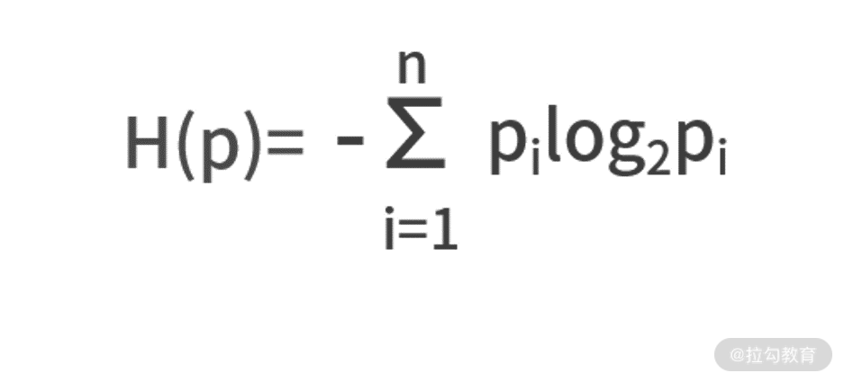
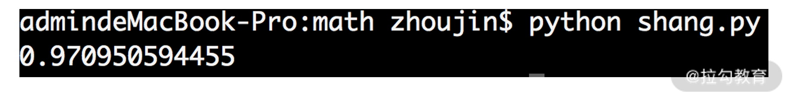
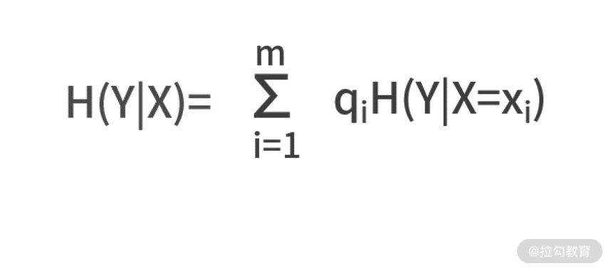
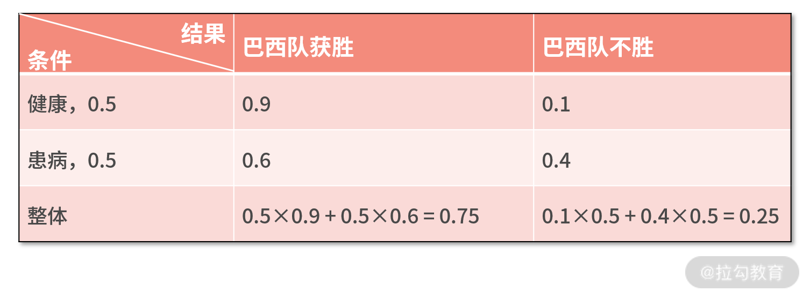
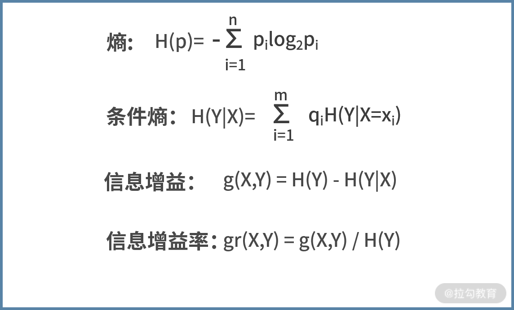

- 00 开篇词 数学，编程能力的营养根基.md.html
- 01 从计数开始，程序员必知必会的数制转换法.md.html
- 02 逻辑与沟通，怎样才能讲出有逻辑的话？.md.html
- 03 用数学决策，如何规划好投入、转化和产出？.md.html
- 04 万物可数学，经典公式是如何在生活中应用的？.md.html
- 05 求极值：如何找到复杂业务的最优解？.md.html
- 06 向量及其导数：计算机如何完成对海量高维度数据计算？.md.html
- 07 线性回归：如何在离散点中寻找数据规律？.md.html
- 08 加乘法则：如何计算复杂事件发生的概率？.md.html
- 09 似然估计：如何利用 MLE 对参数进行估计？.md.html
- 10 信息熵：事件的不确定性如何计算？.md.html
- 11 灰度实验：如何设计灰度实验并计算实验的收益？.md.html
- 12 统计学方法：如何证明灰度实验效果不是偶然得到的？.md.html
- 13 复杂度：如何利用数学推导对程序进行优化？.md.html
- 14 程序的循环：如何利用数学归纳法进行程序开发？.md.html
- 15 递归：如何计算汉诺塔问题的移动步数？.md.html
- 16 二分法：如何利用指数爆炸优化程序？.md.html
- 17 动态规划：如何利用最优子结构解决问题？.md.html
- 18 AI 入门：利用 3 个公式搭建最简 AI 框架.md.html
- 19 逻辑回归：如何让计算机做出二值化决策？.md.html
- 20 决策树：如何对 NP 难复杂问题进行启发式求解？.md.html
- 21 神经网络与深度学习：计算机是如何理解图像、文本和语音的？.md.html
- 22 面试中那些坑了无数人的算法题.md.html
- 23 站在生活的十字路口，如何用数学抉择？.md.html
- 24 结束语 数学底子好，学啥都快.md.html
- 捐赠
10 信息熵：事件的不确定性如何计算？
你好，欢迎来到第 10 课时——信息熵：事件的不确定性如何计算？
从加乘法则开始，我们基于事情的不确定性出发，尝试计算事情发生的可能性。然而，对于事件与事件之间的不确定性如何相比和衡量，单独靠概率就无法说清楚了。我说的这句话是什么意思呢？下面我举个例子来说明。
假设有两场足球赛，也就是两个事件。第一场足球赛，对阵的双方是老挝队和巴西队，标记为事件 A；第二场足球赛，对阵的双方是阿根廷队和葡萄牙队，标记为事件 B。显然，在比赛开始前，这两个事件的比赛结果都具备一定的不确定性。人们也会根据历史数据，分别计算两场足球赛结果的概率。
现在我们思考这样的问题：事件 A 和事件 B 的比赛结果，哪个不确定性更大？
显然是事件 B。因为对于事件 A，除非爆冷，否则巴西队几乎是不可能输给老挝队的，事件 A 比赛结果的不确定性就很低；对于事件 B，阿根廷有梅西，葡萄牙有 C 罗，二者都是球星云集的老牌劲旅，比赛结果的不确定性就非常强。
所以这一讲，我们就来学习如何用一些量化的指标衡量事物的不确定性。
熵
事物的不确定性用“熵”表示。熵越大，则不确定性越强；熵越小，不确定性越小。熵的单位为 bit，所以熵的另一种理解是信息量。
那么什么样的事情的信息量更大呢？一定是对于不确定性事件的结果的信息。
例如，大迷糊向你说，“巴西队 vs 老挝队”的结果是巴西队获胜了，这句话对你而言就是废话，信息量非常少。相反，如果大聪明跟你说，“阿根廷 vs 葡萄牙”的比赛中葡萄牙获胜了，这句话对一个不确定性很强的事件给出了结果，其信息量就很大。
直观来说，越是“废话”，信息量越少；越是描述人们看不明白的事情，信息量就越大。
既然熵可以描述不确定性，那么具体到某个事件身上，熵应该怎么计算呢？我们给出熵的定义式。假设一个事件 A 有 N 个结果，每个结果发生的概率为 pi，那么熵的计算公式为：

我们给一个计算的例子。假设在“巴西队 vs 老挝队”的比赛中，巴西获胜的概率为 0.9，巴西队不胜的概率为 0.1，计算这场比赛的熵。根据定义式计算，可以得出 H(p) = -0.9 * log2 0.9 - 0.1 * log2 0.1 =0.4690。
对于熵的计算，涉及取对数的计算，我们给出下面的代码。
import math
def entropy(*c):
result = 0
islegal = 0
for x in c:
islegal += x
result = result + (-x) * math.log(x,2)
if islegal != 1:
return 'input prob error!'
return result
if __name__ == '__main__':
print entropy(0.9,0.1)
我们对代码进行解读。
- 从第 6 行开始，对输入的每个概率值进行循环。
- 每次循环的动作是，第 7 行计算概率的求和，并用 islegal 变量保存。
- 第 8 行，根据公式来计算熵的值，用 result 变量来保存。
- 最终，判断概率之和是否为 1，如果不是，则输出错误信息；如果没问题，则返回 result。
以上代码执行的结果如下图所示：

接下来，我们换一个事件计算。假设对于“阿根廷 vs 葡萄牙”的比赛中，阿根廷获胜的概率为 0.4，阿根廷不胜的概率为 0.6，试着再来计算下熵的值。
这次，我们直接用代码来运算。将第 15 行，更改为 print entropy(0.4,0.6)，运行结果如下图所示：

可见，此时的熵值比之前“巴西队 vs 老挝队”的要大，因此“阿根廷 vs 葡萄牙”比赛结果的不确定性更强、信息量更大。
条件熵
在概率的学习中，我们学过概率和条件概率。对于熵而言，也有对应的条件熵。条件熵衡量的是，在某个条件 X 下，事件 Y 的不确定性是多少，记作 H(Y|X)。
假设，条件 X 有 m 个可能结果，每个结果发生的概率为 qi，则条件熵的定义式为：

其中 H(Y|X=xi)表示在某个 xi 条件下 Y 的熵。
这个公式有点复杂，我们继续以足球赛的结果为例去理解公式。
假设“巴西队 vs 老挝队”的足球比赛中，正常情况下巴西队获胜的概率为 0.9。然而，最近巴西的天气不太好，球员受到天气的影响后，患病的概率非常高。假设每个球员患病的概率都是 0.5。而且一旦球员患病，巴西队获胜概率将降低到 0.6。那么，我们试着去计算球员身体状况为条件的比赛结果的熵。
我们套用上面的公式来进行计算。标记事件 Y 为比赛结果，条件 X 为球员是否健康。根据例子的信息，X 有两个可能性，分别是 x1（健康）和 x2（患病），且两个可能性发生的概率为 q1= q2= 0.5。
接着，先需要分别计算每个条件下的熵H(Y|X=xi)：
- 健康的情况下，H(Y|X=x1) =-0.9×log20.9-0.1×log20.1 = 0.4690；
- 患病的情况下，H(Y|X=x2) =-0.6×log20.6-0.4×log20.4 = 0.9710。
因此，球员身体状况为条件的比赛结果的熵为H(Y|X) = q1*H(Y|X=x1)+ q2*H(Y|X=x2) = 0.5 * 0.4690 + 0.5 * 0.9710 = 0.72。
信息增益可以描述条件熵和熵的关系
“熵”的含义是不确定性，而“条件熵”的含义是知道了某个条件下的不确定性。因此直觉来看，条件熵应该小于或等于熵，因为增加了“某个条件”就等于是知道了某个信息，最不济就是个无用信息，但无论如何一定会让“不确定性”减小。
这个结论的证明会很复杂，感兴趣的同学可以自己试着推导下。我们借助刚刚的足球比赛的例子，来验证这个结论。先通过这个表格，利用“08 | 加乘法则：如何计算复杂事件发生的概率？”中的加乘法则，分别计算出巴西队获胜和不胜的概率：

接下来，我们将上表算出的巴西队获胜和不胜的概率，代入刚刚已经开发好的代码，计算出比赛结果的熵。执行 print entropy(0.75,0.25)，结果如下图，即 H(Y) = 0.8113。
 而刚刚我们已经计算了条件熵为 H(Y|X) = 0.7200。可见，由于掌握了球员健康或患病这个条件，让比赛结果的不确定性由 0.8113 降低为 0.7200。这个差值，就来自于外部条件的引入，带来事物不确定性的下降，这就称之为信息增益。
而刚刚我们已经计算了条件熵为 H(Y|X) = 0.7200。可见，由于掌握了球员健康或患病这个条件，让比赛结果的不确定性由 0.8113 降低为 0.7200。这个差值，就来自于外部条件的引入，带来事物不确定性的下降，这就称之为信息增益。
- 信息增益，顾名思义就是信息量增加了多少；换句话说，也是不确定性降低了多少。标记为 g(X,Y)，定义式为 g(X,Y) = H(Y) - H(Y|X)。
- 有时候，除了看这个差值以外，还会同时观察降幅的比值。此时为信息增益率，定义式为 gr(X,Y) = g(X,Y) / H(Y)。
回到刚刚足球比赛的例子，它的信息增益为 g(X,Y) = H(Y) - H(Y|X) = 0.8113 - 0.7200 = 0.0913；信息增益率为 gr(X,Y) = g(X,Y) / H(Y) = 0.0913 / 0.8113 = 11.25%
基尼系数
最后，我们再介绍一个描述事物不确定性的方法——基尼系数，标记为 Gini(p)。
这里的基尼系数与衡量国民收入差距的基尼系数是不同的概念，所以不必纠结两者的区别。
基尼系数和熵一样，都是在描述信息量，区别在于二者的计算定义式不同。相对于熵的定义式，基尼系数的定义式只是把其中的 -log2pi替换为(1-pi)，则有

我们仍然围绕“巴西队 vs 老挝队”“阿根廷队 vs 葡萄牙队”的比赛，来计算一下基尼系数。
- 对于巴西队的比赛而言，其基尼系数为 Gini(p) = 0.9(1-0.9) + 0.1(1-0.1) = 0.18
- 对于阿根廷对的比赛而言，其基尼系数为 Gini(p) = 0.4(1-0.4) + 0.6(1-0.6) = 0.48
显然，阿根廷队的比赛基尼系数更大，不确定性更强。定性的结果与熵的计算方式是一致的。
利用“信息增益”制定计划
讲了这么多不确定性的计算方法，那么它们到底有什么实际应用的场景呢？其实，描绘出事物的不确定性，更多的是帮助人们做出正确的选择。
我们说过，熵的由高到低，就是信息量的由高到低，也就是不确定性的由高到低。也就是，熵越低的事情，越接近废话，也就越有把握。那么我们在调节资源投入的时候，就应该尽量避免在熵低的事情上的投入；相反，应该投入到熵比较高的事情上。
所以，当明确了要在熵高的事情上投入资源后，就要想办法让这个事情的熵逐步降低，让它的不确定性降低，你可以理解为解决问题的过程就是让熵减少的过程。而要让熵减少，就需要不断地有外部条件输入。通过外部条件输入，获得信息增益，来不断降低熵。
上面的描述很抽象，我们用一个具体的例子来说明，假设大漂亮是某公司的总监。在下个月，有两个同等重要的技术方向，分别标记为 A 和 B。按照现在的发展趋势来看，A 方向在下个月成功解决的概率为 0.9，无法解决的概率为 0.1；B 方向在下个月成功解决的概率为 0.6，无法解决的概率为 0.4。
此时就如同刚刚的足球赛一样。A 的熵为0.4690，B 的熵为 0.9710。显然，B 的不确定性更强，是更需要投入人力去解决的。因此大漂亮决定把资源向 B 倾斜，安排了两名工程师去解决 A 问题，而安排了 5 名工程师去解决 B 问题。
接着，大漂亮仍然感觉 B 方向的不确定性很强，怎么办呢？她想到，要通过引入外部条件，来降低 B 的熵。因此她通过社招，招聘到了一名 B 技术方向的资深专家大聪明。大聪明的加入，显然是个外部条件，带来了信息增益；因此，B 技术方向的不确定性就在下降。最终在月底，A 方向和 B 方向，都取得了技术突破。
小结
我们再回顾一下“概率”和“熵”的区别。对于一个事件而言，它可能有很多个结果。例如，“老挝队和巴西队的足球比赛”这是一个事件，而这个事件有很多可能的结果，例如巴西队胜、巴西队不胜。
- 概率，描述的是某个事件的结果，发生的可能性。有时候，在不刻意强调区分“事件”和“事件结果”的时候，也被简称为事件发生的可能性。
- 熵，描述的则是事件背后蕴含的信息量和不确定性。
你也可以理解为，“可能性”探讨的是事件某个结果的发生；而“不确定性”探讨的是一个事情下的不同结果发生的情况。
最后总结一下这一讲的要点。熵是描述事物不确定性的量。在定量描述了事物的不确定性之后，可以辅助人们做出更加合理的资源分配决策。条件熵，是指引入了某个外部条件后的熵；条件引入，必然会带来信息增益，也就是会让熵变小，这个变小的幅度可以用信息增益或信息增益率来描述。
这四个关键概念的定义式如下，你可以通过定义式去反复领悟它们之间的区别和意义。  我们给一个练习题，假设韩国和日本要踢一场友谊赛，比赛当天天气存在一定的不确定性。已知，比赛当天有 0.3 的概率会下雨。如果下雨，韩国队获胜的概率可以达到 0.7；如果晴天，则韩国队获胜的概率只有 0.3。假设 Y 为比赛结果，X 为天气状况，试着求条件熵 H(Y|X)。
© 2019 - 2023 Liangliang Lee. Powered by gin and hexo-theme-book.